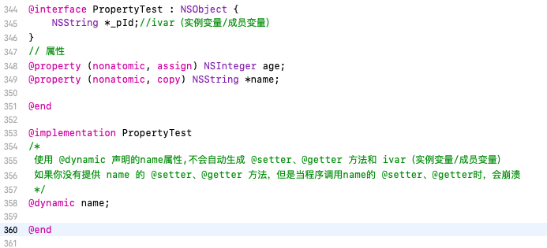
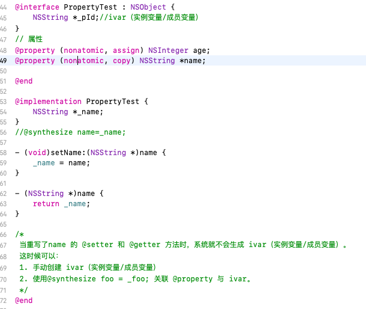
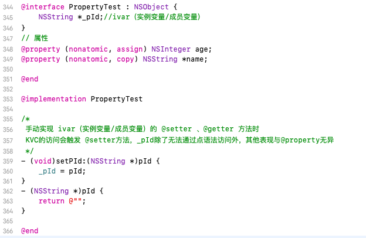
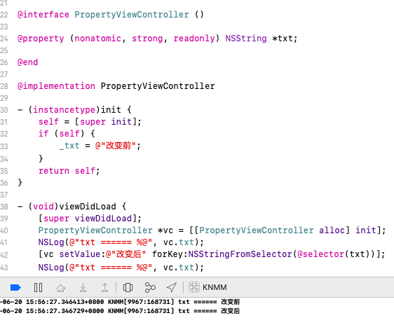
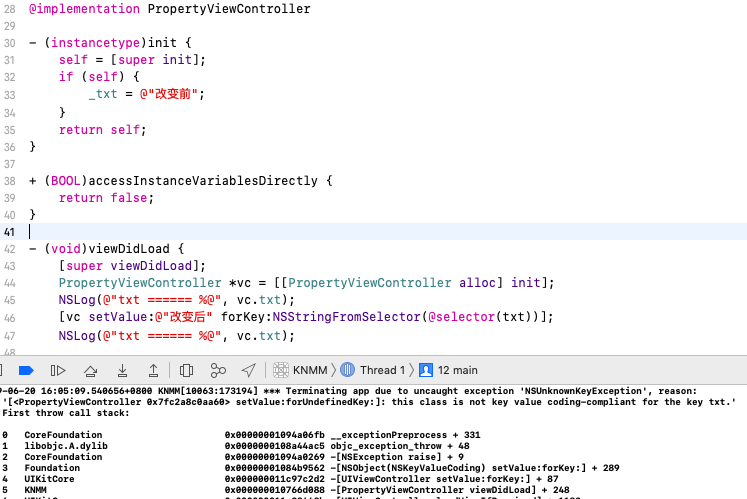

ARC下不指定任何属性关键字时,默认的关键字有哪些?
对于基本数据类型默认关键字是: atomic, readwrite, assign
对于普通的OC对象: atomic, readwrite, strong
@property, @synthesize, @dynamic
@property = interface + ivar（实例变量/成员变量) + setter/getter
@property 属性有两个关键词 @synthesize 和 @dynamic。默认是 @synthesize。
@synthesize 如果你没有手动实现 @setter 和 @getter 方法，编译器会自动为你加上这两个方法。
@dynamic 告诉编译器属性的 @setter 和 @getter 方法由用户自己实现，不自动生成。
⚠️ 以下几点需要注意 ⚠️
假如一个属性被标记为 @dynamic var，如果没有提供 @setter和 @getter 方法，当程序调用 @setter或 @getter时会崩溃。编译时没问题，运行时才执行相应的方法，这就是所谓的动态绑定。

默认情况编译器自动为 @property 生成 ivar（实例变量/成员变量）、@setter和 @getter 方法。当重写 @property 的 @setter 和 @getter 方法时，系统就不会生成 ivar（实例变量/成员变量）

手动实现 ivar（实例变量/成员变量）的 @setter 和 @getter 方法，KVC的访问会触发 @setter方法，_pId除了无法通过点语法访问外，其他表现与@property无异

以下情况不会 autosynthesis（自动合成）:
参考stackoverflow1
2
3
4
5
61.同时重写了 @setter 和 @getter 方法时
2.重写了只读属性的 @getter 方法时
3.使用了 @dynamic 声明时
4.在 @protocol 中定义的所有属性
5.在 category 中定义的所有属性
6.重载的属性
readonly, readwrite
readonly: 只读，默认只生成getter方法，不生成setter方法。如果调用setter方法会报 Assignment to readonly property 错误。
注意 我们可以利用kvc来修改readonly属性

如果我们在项目中做如下修改会发现程序会崩溃，txt属性无法修改

参考官方文档Key-Value Coding Programming Guide可知:
默认该方法返回yes，访问器会寻找名为 _\<key>, _is\<Key>, \<key>, is\<Key>的成员变量. 如果返回false, 就会跳转至第6步报[valueForUndefinedKey:]错误。
readwrite: property默认修饰词，代表可读可写。
nonotomic, automic
automic: 原子性，系统默认的属性修饰词，相对线程安全的，因为系统生成的getter/setter方法会进行加锁操作，这个锁仅仅保证了getter和setter存取方法的线程是安全的。
1 | ep: 线程1调用了某一属性的setter方法并进行到了一半, 线程2调用其getter方法,那么会执行完setter操作后,在执行getter操作, 线程2会获取到线程1 setter后的完整的值. |
nonotomic: 非原子性，效率较快，线程不安全, 如果有两个线程访问同一个属性, 会出现数据紊乱
assign, weak, strong
assign: 在MRC 和 ARC下都可以使用，修饰基本数据类型，不会使对象的引用计数 +1, 如果用assign去修饰对象，这个对象会被立即释放，assign在被释放的时候是不会自动置为nil，保留对象的指针地址，从而形成野指针(EXC_BAD_ACCESS)，如果给该对象发送消息会奔溃.
weak: 用于修饰对象，不会使对象的引用计数 +1, 当对象被释放时自动置为nil（oc向nil发送消息不会崩溃），比较常用的是delegate属性设置，相当于MRC下的assign，如果用来修饰基本数据类型xcode会报错
weak底层原理
1 | runtime维护了一个weak表，用于存储指向某个对象的所有weak指针。weak表其实是一个hash（哈希）表，key是所指对象的地址，Value是weak指针的地址（这个地址的值是所指对象指针的地址）数组。 |
strong: 用于修饰对象，引用计数+1，相当于MRC下的reatin
retain, copy
copy: 分为深复制和浅复制
1 | 深复制: 内容拷贝，源对象和副本对象指向两个不同的对象，源对象的引用计数不变，副本对象的引用计数为1。 |
只有不可变对象创建不可变副本(copy)才是浅复制，其它的都是深复制，copy减少对象的上下文依赖。
⚠️被定义为copy属性的对象必须要符合NSCopying协议，实现- (id)copyWithZone:(NSZone *)zone方法。
retain: 常用在MRC下，引用计数+1，只能修饰oc对象（CoreFoundation是C语言框架，没有引用计数，不能用retain修饰），即对象的指针拷贝。
nonnull, nullable, null_resettable, null_unspecified
nonnull: 不能为空,用来修饰属性,或者方法的参数,方法的返回值,不适用于assign属性,因为他是专门用来修饰指针的
1 | @property (nonatomic, copy, nonnull) NSString *name; |
nullable: 表示可以为空,代码提示会告诉你这个谁能够是可以为空的
1 | @property (nonatomic, copy, nullable) NSString *name; |
null_resettable: 表示get方法不能返回为空, set方法可以为空, 必须重写该属性的get方法,保证返回值不为空，且只有下面这一种表达方式
1 | @property(nonatomic, strong, null_resettable) NSNumber * number; |
null_unspecified: 表示不确定是否为空
1 | @property(nonatomic, strong) NSNumber *_Null_unspecified height; |
以上内容参考以下文章: